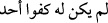

ulemâ’nın kâşifi “Samed” lafzı, ukalânınki ise “__WORD__dir. __WORD__ ifâdesi avâmın tevhidine
işârettir. Çünkü onlar yaratıcının varlığını şâhit ve delillerle bilirler.
Bâzı büyükler de demişlerdir ki: İhlâs sûresi nüzul/mânevî iniş hâline işârettir. O da
meczûbun hâlidir. Evvelâ “__WORD__ der. Su‘ûd (yükseliş) hâli sondan __WORD__
cânibine doğru kabul edilir. Evvelâ __WORD__ der, sonra __WORD__ deyinceye kadar
yükselir. Fakat sâliklerin Kur’ân’da __WORD__’yi bulmakla yetinmesi uygun değildir. Bilâkis
fiilî Kur’ân’a yükselip Kur’ân’da __WORD__ ’yi müşâhede etmesi gerekir. __WORD__ bütün âlemleri ihâta
eder. Sâlike ilk keşfolunan da odur.
Bu sûre kısalığına rağmen bütün maârif-i ilâhiyyeyi içerdiği ve bu hususta ilhâda
düşenlere bir reddiye olduğu için hadîs-i şerifte şöyle buyrulmuştur: “O Kur’ân’ın üçte
birine muâdil/denktir.” [261] Kur’ân-ı Kerîm’in maksadları akâid, ahkâm ve kıssaları
beyâna münhasırdır. Her kim bunların hepsini denk görürse, maksadın sâdece zât-ı ilâhî
olduğunu kabul eder. O da mebde’ ve Allah’ın sıfatları ilmidir. Diğerleri ise ona
vesîledir.
Rasûlullah (s.a.) Efendimiz şöyle buyurmuştur: “Yedi kat semâ ve yedi kat arz “Kul
Huvallâhu Ahad” temeli üzerine bina edilmiştir.” [262] Yâni onlar, ancak ve ancak
Allah’ın tevhîdine ve bu sûrede anlatılan sıfatlarının mârifetine delîl olarak
yaratılmıştır. Diğer bir rivâyette de şöyle geçer: Rasûlullah (s.a.) bir kimsenin İhlâs
sûresini okuduğunu duymuştu. “Gerekti” buyurdu. “Ya Rasûlallah ne gerekti?” diye
sorulunca “Cennet gerekti” buyurdu.[263]
Süheyl bin Sa‘d (r.a.)’den rivâyet edildiğine göre, bir kişi Rasûlullah (s.a.)’e geldi
ve fakirlikten şikâyet etti. Rasûlullah Efendimiz ona şöyle buyurdu: “Evine girdiğin
zaman selâm ver, kimse yoksa kendine selâm ver ve “İhlâs” sûresini bir defa oku!” O
kişi bu denileni yaptı. Allah ona öylesine bol rızık verdi ki, komşuları bile bundan
istifâde etti.
Hz. Ali’nin şöyle dediği rivâyet olunur: Kim İhlâs sûresini sabah namazından sonra
on bir defa okursa şeytan uğraşsa da o gün ona hiçbir günâh bulaşmaz.
Yine hadîs-i şerifte şöyle geçer: “Sizden biri bir gecede Kur’ân’ı hatmekten âciz
midir?” Denildi ki: “Yâ Rasûlallah kimin buna gücü yeter?” Efendimiz de şöyle
buyurdu: “Bu hatim İhlâs sûresini üç defa okumasıdır.” [264]
Rivâyet olunduğuna göre Cebrâil (a.s.) Tebük’te indi ve şöyle dedi: “Ya Rasûlallah!
Muaviye bin Muâviye el-Müzenî (r.a.) Medîne’de vefât etti. İster misin senin için
yeryüzünü düreyim de onun cenâze namazını kılasın?” Efendimiz (s.a.), “Evet”
buyurdu. O da kanadıyla yere vurdu ve onun yatağını kaldırıp Efendimiz’in önüne
getirdi. Allah Rasûlü (s.a.) onun namazını kıldırdı. Ardında iki saf melek vardı ve her
bir safta yetmiş bin melek bulunuyordu. Sonra döndü. Rasûlullah (s.a.): “O, bu makâma
ne ile ulaştı?” diye sorunca Cebrâil (a.s.): “İhlâs sûresini sevip, gelip giderken,
ayaktayken, otururken her hâlinde okuması sebebiyle” cevabını verdi. (Taberânî) [265]
İhlâs sûresi nâzil olduğunda ona yetmiş bin melek eşlik etmiştir. Her semânın ehline